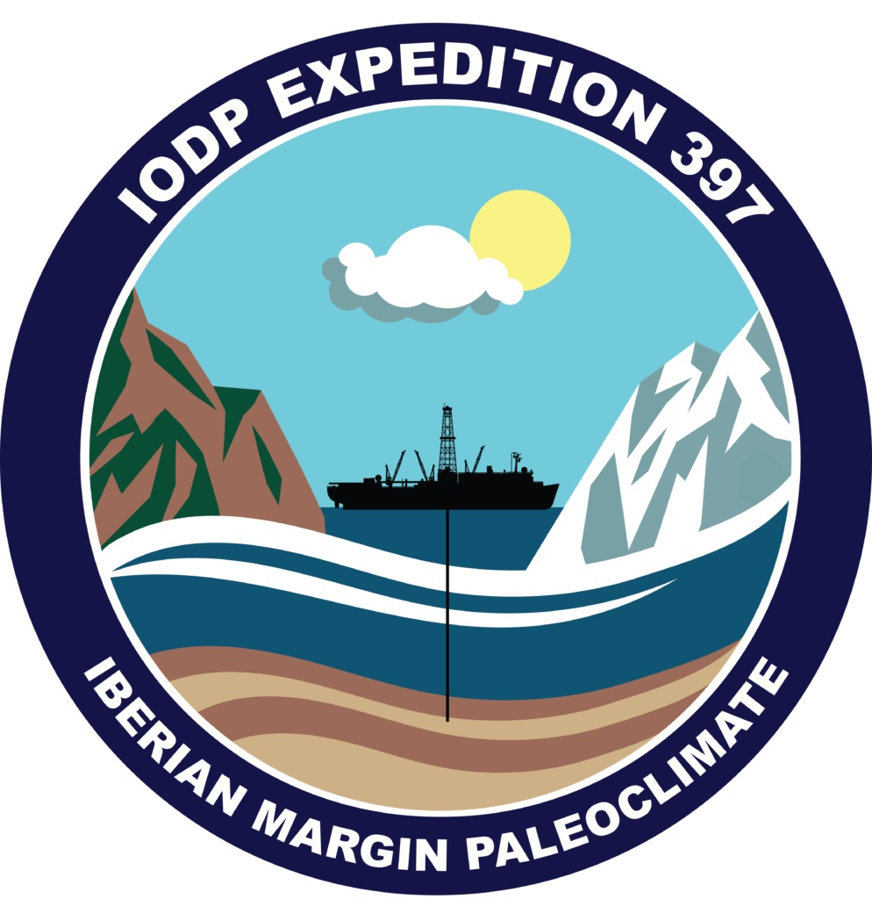

I was a sedimentologist on International Ocean Discovery Program (IODP) Expedition 397: Iberian Margin Paleoclimate from October 11, 2022 to December 11, 2022. On this expedition, we recovered marine sediments from the Plio-Pleistocene at four sites on the Iberian Margin, creating a depth transect to approximately 4700 meters below sea level (mbsl). Information on Expedition 397, including the IODP Proceedings Volume summarizing our shipboard findings can be found here.
Currently, I am working on stable isotope analysis of benthic foraminifera from Site U1587 (37˚34.86’N, 10˚21.54’W, 3479 mbsl) in the Pleistocene. The δ18O of benthic foraminifera, which is a proxy for bottom water temperature and isotopic composition, can be correlated with independently dated, regional or global benthic δ18O stacks and used to refine age models. The δ13C of benthic foraminifera, such as Cibicidoides wuellerstorfi, which faithfully record the isotopic composition of the seawater they live in, is a proxy for deep water mass sources and ventilation, which may be used to characterize changes in the Atlantic Meridional Overturning Circulation over time.